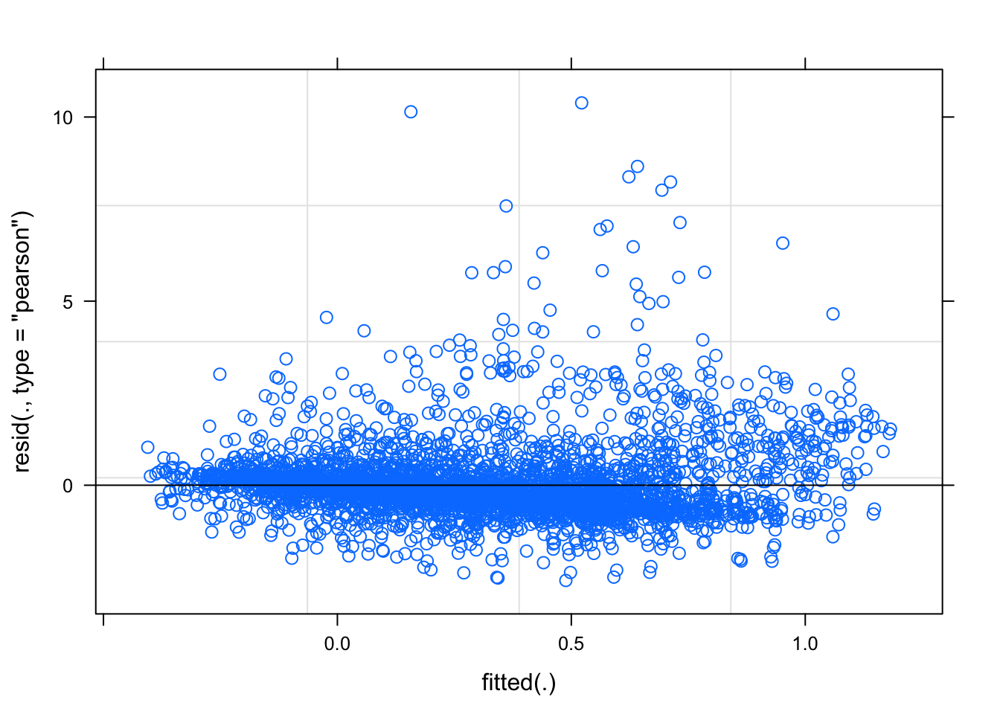
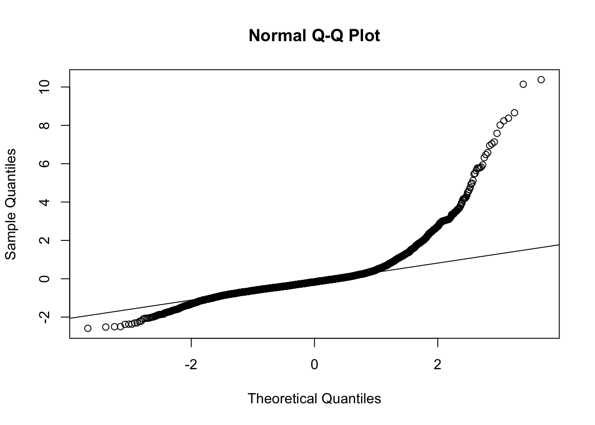
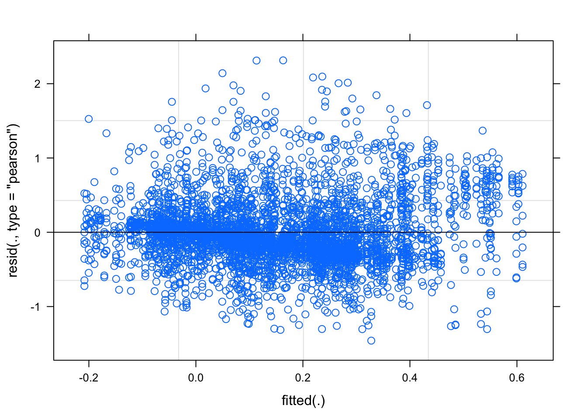
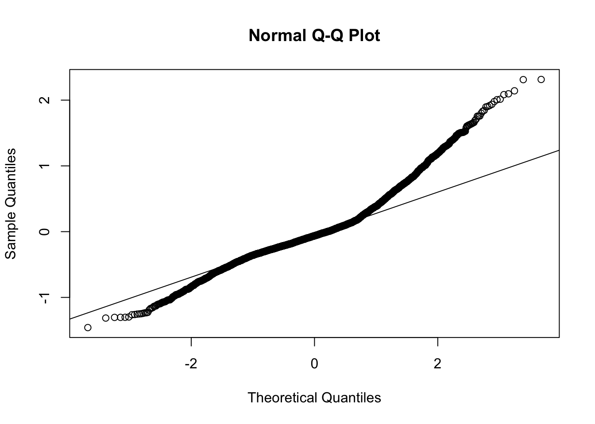

Last updated: 2020-09-16
Checks: 7 0
Knit directory: dynamicRFM/
This reproducible R Markdown analysis was created with workflowr (version 1.6.2). The Checks tab describes the reproducibility checks that were applied when the results were created. The Past versions tab lists the development history.
Great! Since the R Markdown file has been committed to the Git repository, you know the exact version of the code that produced these results.
Great job! The global environment was empty. Objects defined in the global environment can affect the analysis in your R Markdown file in unknown ways. For reproduciblity it’s best to always run the code in an empty environment.
The command set.seed(20200901) was run prior to running the code in the R Markdown file. Setting a seed ensures that any results that rely on randomness, e.g. subsampling or permutations, are reproducible.
Great job! Recording the operating system, R version, and package versions is critical for reproducibility.
Nice! There were no cached chunks for this analysis, so you can be confident that you successfully produced the results during this run.
Great job! Using relative paths to the files within your workflowr project makes it easier to run your code on other machines.
Great! You are using Git for version control. Tracking code development and connecting the code version to the results is critical for reproducibility.
The results in this page were generated with repository version 12b577b. See the Past versions tab to see a history of the changes made to the R Markdown and HTML files.
Note that you need to be careful to ensure that all relevant files for the analysis have been committed to Git prior to generating the results (you can use wflow_publish or wflow_git_commit). workflowr only checks the R Markdown file, but you know if there are other scripts or data files that it depends on. Below is the status of the Git repository when the results were generated:
Ignored files:
Ignored: .DS_Store
Ignored: .Rproj.user/
Ignored: data/.DS_Store
Untracked files:
Untracked: analysis/clean_write_function.R
Untracked: data/Amy_raw/
Untracked: data/clean/
Untracked: data/combined/
Untracked: data/dirty/
Untracked: output/tog_sep.png
Untracked: resources/
Untracked: scripts/
Untracked: site_libs/
Note that any generated files, e.g. HTML, png, CSS, etc., are not included in this status report because it is ok for generated content to have uncommitted changes.
These are the previous versions of the repository in which changes were made to the R Markdown (analysis/7_CHEEKanalysis_happy_angry.Rmd) and HTML (docs/7_CHEEKanalysis_happy_angry.html) files. If you’ve configured a remote Git repository (see ?wflow_git_remote), click on the hyperlinks in the table below to view the files as they were in that past version.
| File | Version | Author | Date | Message |
|---|---|---|---|---|
| Rmd | 12b577b | Your Name | 2020-09-16 | z check code |
library(tidyverse)
library(here)
library(lme4)
library(lmerTest)
library(broom.mixed)
library(pixiedust)
library(beepr)
# note if you run LMM with just the lme4 package you wont get any pvalues
# loading lmerTest as well gets you pvalues when you test anova(model)df <- read_csv(here("data", "combined", "5_zdiff_binscreened.csv"))
# fix data types, all chars to factors
df$emotion <- as.factor(df$emotion)
df <- df %>% mutate_if(is.character,as.factor)
glimpse(df)Rows: 18,576
Columns: 7
$ pp_no <fct> pp401, pp401, pp401, pp401, pp401, pp401, pp401, pp401…
$ condition <fct> dyn, dyn, dyn, dyn, dyn, dyn, dyn, dyn, dyn, dyn, dyn,…
$ emotion <fct> 626, 626, 626, 626, 626, 626, 626, 626, 626, 626, 626,…
$ trial <fct> trial1, trial1, trial1, trial1, trial1, trial1, trial1…
$ muscle <fct> brow, brow, brow, brow, brow, brow, cheek, cheek, chee…
$ bin <fct> bin1, bin2, bin3, bin4, bin5, bin6, bin1, bin2, bin3, …
$ Zdiff <dbl> 0.149188943, 0.159161634, -0.245679429, -0.559687470, …Make dataframe with just happy/angry for cheek
dfHA_cheek <- df %>%
filter(emotion %in% c("626", "727")) %>%
filter(muscle == "cheek") %>%
arrange(pp_no, emotion, trial, bin)
glimpse(dfHA_cheek)Rows: 4,668
Columns: 7
$ pp_no <fct> pp401, pp401, pp401, pp401, pp401, pp401, pp401, pp401…
$ condition <fct> dyn, dyn, dyn, dyn, dyn, dyn, dyn, dyn, dyn, dyn, dyn,…
$ emotion <fct> 626, 626, 626, 626, 626, 626, 626, 626, 626, 626, 626,…
$ trial <fct> trial1, trial1, trial1, trial1, trial1, trial1, trial2…
$ muscle <fct> cheek, cheek, cheek, cheek, cheek, cheek, cheek, cheek…
$ bin <fct> bin1, bin2, bin3, bin4, bin5, bin6, bin1, bin2, bin3, …
$ Zdiff <dbl> -0.065056480, 0.063689305, 0.494685856, 1.083790897, 1…Mimicry to happy would be evidenced by greater cheek acvitity over time (bin) for happy than angry.
LMM- looking to predict Zdiff from emotion (happy angry), and bin (1-6) and their interaction, allowing intercepts to vary for participant and trial.
This model predicts Zdiff from fixed effects of emotion (happy, angry), bin (1-10), and emotion x bin interaction. It includes random intercepts for participant (accounting for the potential of some kids to just have more active faces than others) and random intercepts for trials (accounting for the possibiity that face activation differs across the the 10 trials). This model doesn’t include slopes (yet).
It is interesting that when I don’t include (1|trial) here the model doesn’t converge. I thought the solution to a model that doesnt converge is to TAKE OUT complexity, not add it in. I kinda want to take trial out (because the output suggest it accounts for a really small amount of variance) but without it the model wont converge
lm_model_cheek <- lmer(Zdiff ~ emotion + bin + emotion*bin + (1|pp_no) + (1|trial), data=dfHA_cheek, REML = FALSE) # Check homogeneity of variance assumption
plot(lm_model_cheek)
# Check normality
qqnorm(resid(lm_model_cheek))
qqline(resid(lm_model_cheek))
YIKES qqplot not good, the scale of theoretical (-2 to 2) vs. sample (-2 to 10!) is ALL out of WACK. What to do about that….?
Usually we would use a log transform but the Zdiff includes negative values. Alternative = log modulus transform. This transformation log transforms the absolute value (without the -) and then puts the sign back on. Make a new column for log modulus.
dfHA_cheek <- dfHA_cheek %>%
mutate(log_modulus = sign(Zdiff) * log(1+abs(Zdiff)))lm_model_cheek_1 <- lmer(log_modulus ~ emotion + bin + emotion:bin + (1|pp_no), data=dfHA_cheek, REML = FALSE) Residuals are more evenly distributed than before, qq plot is SO much better (at least the sample quantiles are on the same scale). It is not great but maybe the best we can do.
# Check homogeneity of variance assumption
plot(lm_model_cheek_1)
# Check normality
qqnorm(resid(lm_model_cheek_1))
qqline(resid(lm_model_cheek_1))
aov_output <- anova(lm_model_cheek_1) %>%
rownames_to_column() %>%
rename(term = rowname)summary(lm_model_cheek_1)Linear mixed model fit by maximum likelihood . t-tests use
Satterthwaite's method [lmerModLmerTest]
Formula: log_modulus ~ emotion + bin + emotion:bin + (1 | pp_no)
Data: dfHA_cheek
AIC BIC logLik deviance df.resid
5619.0 5707.9 -2795.5 5591.0 4228
Scaled residuals:
Min 1Q Median 3Q Max
-3.1554 -0.5700 -0.1370 0.3734 5.0055
Random effects:
Groups Name Variance Std.Dev.
pp_no (Intercept) 0.01557 0.1248
Residual 0.21372 0.4623
Number of obs: 4242, groups: pp_no, 50
Fixed effects:
Estimate Std. Error df t value Pr(>|t|)
(Intercept) -5.114e-03 3.028e-02 3.125e+02 -0.169 0.866014
emotion727 -8.101e-03 3.473e-02 4.192e+03 -0.233 0.815570
binbin2 1.231e-01 3.480e-02 4.192e+03 3.538 0.000407 ***
binbin3 2.781e-01 3.485e-02 4.192e+03 7.980 1.88e-15 ***
binbin4 3.396e-01 3.472e-02 4.192e+03 9.781 < 2e-16 ***
binbin5 3.281e-01 3.470e-02 4.192e+03 9.456 < 2e-16 ***
binbin6 2.805e-01 3.490e-02 4.192e+03 8.037 1.19e-15 ***
emotion727:binbin2 -8.599e-02 4.916e-02 4.192e+03 -1.749 0.080329 .
emotion727:binbin3 -2.133e-01 4.913e-02 4.192e+03 -4.342 1.45e-05 ***
emotion727:binbin4 -2.014e-01 4.904e-02 4.192e+03 -4.108 4.07e-05 ***
emotion727:binbin5 -1.583e-01 4.909e-02 4.192e+03 -3.225 0.001268 **
emotion727:binbin6 -9.016e-02 4.934e-02 4.192e+03 -1.827 0.067704 .
---
Signif. codes: 0 '***' 0.001 '**' 0.01 '*' 0.05 '.' 0.1 ' ' 1
Correlation of Fixed Effects:
(Intr) emt727 binbn2 binbn3 binbn4 binbn5 binbn6 e727:2 e727:3
emotion727 -0.576
binbin2 -0.575 0.501
binbin3 -0.574 0.500 0.499
binbin4 -0.576 0.502 0.501 0.500
binbin5 -0.576 0.502 0.501 0.501 0.502
binbin6 -0.573 0.500 0.499 0.498 0.500 0.500
emtn727:bn2 0.407 -0.706 -0.708 -0.353 -0.355 -0.355 -0.353
emtn727:bn3 0.407 -0.707 -0.354 -0.709 -0.355 -0.355 -0.353 0.499
emtn727:bn4 0.408 -0.708 -0.355 -0.354 -0.708 -0.356 -0.354 0.500 0.501
emtn727:bn5 0.407 -0.707 -0.354 -0.354 -0.355 -0.707 -0.353 0.500 0.500
emtn727:bn6 0.405 -0.704 -0.353 -0.352 -0.353 -0.354 -0.707 0.497 0.497
e727:4 e727:5
emotion727
binbin2
binbin3
binbin4
binbin5
binbin6
emtn727:bn2
emtn727:bn3
emtn727:bn4
emtn727:bn5 0.501
emtn727:bn6 0.498 0.498tidy_cheek1 <- tidy(lm_model_cheek_1)beep(1)lm_model_cheek_2 <- lmer(log_modulus ~ emotion + bin + emotion*bin + (1 + emotion|pp_no) , data=dfHA_cheek, REML = FALSE)
# random intercepts for pp_no and slopes for emotionanova(lm_model_cheek_2)Type III Analysis of Variance Table with Satterthwaite's method
Sum Sq Mean Sq NumDF DenDF F value Pr(>F)
emotion 2.113 2.1126 1 49.9 10.799 0.001863 **
bin 36.915 7.3829 5 4142.3 37.739 < 2.2e-16 ***
emotion:bin 5.967 1.1933 5 4142.3 6.100 1.231e-05 ***
---
Signif. codes: 0 '***' 0.001 '**' 0.01 '*' 0.05 '.' 0.1 ' ' 1summary(lm_model_cheek_2)Linear mixed model fit by maximum likelihood . t-tests use
Satterthwaite's method [lmerModLmerTest]
Formula: log_modulus ~ emotion + bin + emotion * bin + (1 + emotion |
pp_no)
Data: dfHA_cheek
AIC BIC logLik deviance df.resid
5350.7 5452.3 -2659.3 5318.7 4226
Scaled residuals:
Min 1Q Median 3Q Max
-3.3334 -0.5400 -0.1104 0.4079 5.0315
Random effects:
Groups Name Variance Std.Dev. Corr
pp_no (Intercept) 0.05105 0.2259
emotion727 0.07208 0.2685 -0.88
Residual 0.19563 0.4423
Number of obs: 4242, groups: pp_no, 50
Fixed effects:
Estimate Std. Error df t value Pr(>|t|)
(Intercept) -6.137e-03 3.969e-02 9.970e+01 -0.155 0.877439
emotion727 -7.062e-03 5.045e-02 1.218e+02 -0.140 0.888917
binbin2 1.240e-01 3.330e-02 4.142e+03 3.724 0.000198 ***
binbin3 2.799e-01 3.334e-02 4.142e+03 8.393 < 2e-16 ***
binbin4 3.411e-01 3.322e-02 4.142e+03 10.265 < 2e-16 ***
binbin5 3.298e-01 3.320e-02 4.142e+03 9.932 < 2e-16 ***
binbin6 2.807e-01 3.339e-02 4.142e+03 8.404 < 2e-16 ***
emotion727:binbin2 -8.619e-02 4.704e-02 4.142e+03 -1.832 0.066967 .
emotion727:binbin3 -2.148e-01 4.700e-02 4.142e+03 -4.570 5.02e-06 ***
emotion727:binbin4 -2.026e-01 4.692e-02 4.142e+03 -4.318 1.61e-05 ***
emotion727:binbin5 -1.597e-01 4.697e-02 4.142e+03 -3.399 0.000683 ***
emotion727:binbin6 -8.954e-02 4.721e-02 4.142e+03 -1.897 0.057954 .
---
Signif. codes: 0 '***' 0.001 '**' 0.01 '*' 0.05 '.' 0.1 ' ' 1
Correlation of Fixed Effects:
(Intr) emt727 binbn2 binbn3 binbn4 binbn5 binbn6 e727:2 e727:3
emotion727 -0.807
binbin2 -0.419 0.330
binbin3 -0.419 0.329 0.499
binbin4 -0.420 0.331 0.501 0.500
binbin5 -0.421 0.331 0.501 0.501 0.503
binbin6 -0.418 0.329 0.499 0.498 0.500 0.500
emtn727:bn2 0.297 -0.465 -0.708 -0.353 -0.355 -0.355 -0.353
emtn727:bn3 0.297 -0.465 -0.354 -0.709 -0.355 -0.355 -0.353 0.499
emtn727:bn4 0.298 -0.466 -0.355 -0.354 -0.708 -0.356 -0.354 0.500 0.501
emtn727:bn5 0.297 -0.466 -0.354 -0.354 -0.355 -0.707 -0.353 0.500 0.500
emtn727:bn6 0.296 -0.463 -0.353 -0.352 -0.353 -0.354 -0.707 0.497 0.497
e727:4 e727:5
emotion727
binbin2
binbin3
binbin4
binbin5
binbin6
emtn727:bn2
emtn727:bn3
emtn727:bn4
emtn727:bn5 0.501
emtn727:bn6 0.498 0.498tidy_cheek2 <- tidy(lm_model_cheek_2)Lower than intercepts only model
AIC(lm_model_cheek_1)[1] 5618.989AIC(lm_model_cheek_2)[1] 5350.685Use anova to test if there is difference in fit.
anova(lm_model_cheek_1, lm_model_cheek_2)Data: dfHA_cheek
Models:
lm_model_cheek_1: log_modulus ~ emotion + bin + emotion:bin + (1 | pp_no)
lm_model_cheek_2: log_modulus ~ emotion + bin + emotion * bin + (1 + emotion |
lm_model_cheek_2: pp_no)
Df AIC BIC logLik deviance Chisq Chi Df Pr(>Chisq)
lm_model_cheek_1 14 5619.0 5707.9 -2795.5 5591.0
lm_model_cheek_2 16 5350.7 5452.3 -2659.3 5318.7 272.3 2 < 2.2e-16
lm_model_cheek_1
lm_model_cheek_2 ***
---
Signif. codes: 0 '***' 0.001 '**' 0.01 '*' 0.05 '.' 0.1 ' ' 1Model with random slopes for effect of emotion AND intercepts for participants provides better fit than model with intercepts for participants only.
beep(2)lm_model_cheek_3 <- lmer(log_modulus ~ emotion + bin + emotion*bin + (1 + emotion + bin|pp_no), data=dfHA_cheek, REML = FALSE) boundary (singular) fit: see ?isSingular# random intercepts for pp_no and slopes for emotion and binaov_output3 <- anova(lm_model_cheek_3)
summary(lm_model_cheek_3)Linear mixed model fit by maximum likelihood . t-tests use
Satterthwaite's method [lmerModLmerTest]
Formula: log_modulus ~ emotion + bin + emotion * bin + (1 + emotion +
bin | pp_no)
Data: dfHA_cheek
AIC BIC logLik deviance df.resid
5282.1 5542.6 -2600.1 5200.1 4201
Scaled residuals:
Min 1Q Median 3Q Max
-3.4528 -0.5320 -0.0992 0.4122 5.2315
Random effects:
Groups Name Variance Std.Dev. Corr
pp_no (Intercept) 0.017418 0.13198
emotion727 0.072462 0.26919 -0.95
binbin2 0.003991 0.06318 0.72 -0.48
binbin3 0.022663 0.15054 0.76 -0.63 0.78
binbin4 0.031118 0.17640 0.71 -0.66 0.59 0.96
binbin5 0.035551 0.18855 0.54 -0.56 0.34 0.85 0.96
binbin6 0.034951 0.18695 0.38 -0.46 0.10 0.70 0.86
Residual 0.187670 0.43321
0.97
Number of obs: 4242, groups: pp_no, 50
Fixed effects:
Estimate Std. Error df t value Pr(>|t|)
(Intercept) -5.828e-03 2.967e-02 1.068e+02 -0.196 0.844633
emotion727 -7.774e-03 5.008e-02 1.180e+02 -0.155 0.876905
binbin2 1.229e-01 3.381e-02 5.799e+02 3.633 0.000305 ***
binbin3 2.794e-01 3.899e-02 7.086e+01 7.166 5.87e-10 ***
binbin4 3.412e-01 4.100e-02 4.654e+01 8.320 9.17e-11 ***
binbin5 3.304e-01 4.206e-02 3.429e+01 7.856 3.59e-09 ***
binbin6 2.823e-01 4.206e-02 3.282e+01 6.711 1.24e-07 ***
emotion727:binbin2 -8.332e-02 4.607e-02 4.093e+03 -1.808 0.070622 .
emotion727:binbin3 -2.134e-01 4.604e-02 4.092e+03 -4.634 3.70e-06 ***
emotion727:binbin4 -2.022e-01 4.596e-02 4.092e+03 -4.399 1.11e-05 ***
emotion727:binbin5 -1.606e-01 4.601e-02 4.093e+03 -3.491 0.000486 ***
emotion727:binbin6 -9.226e-02 4.625e-02 4.095e+03 -1.995 0.046137 *
---
Signif. codes: 0 '***' 0.001 '**' 0.01 '*' 0.05 '.' 0.1 ' ' 1
Correlation of Fixed Effects:
(Intr) emt727 binbn2 binbn3 binbn4 binbn5 binbn6 e727:2 e727:3
emotion727 -0.813
binbin2 -0.410 0.218
binbin3 -0.200 0.010 0.516
binbin4 -0.166 -0.046 0.478 0.652
binbin5 -0.211 -0.016 0.430 0.619 0.678
binbin6 -0.277 0.034 0.390 0.564 0.638 0.687
emtn727:bn2 0.389 -0.459 -0.683 -0.296 -0.281 -0.274 -0.274
emtn727:bn3 0.389 -0.459 -0.342 -0.594 -0.282 -0.275 -0.275 0.499
emtn727:bn4 0.390 -0.460 -0.342 -0.297 -0.562 -0.275 -0.275 0.500 0.501
emtn727:bn5 0.390 -0.460 -0.342 -0.296 -0.282 -0.547 -0.275 0.499 0.500
emtn727:bn6 0.388 -0.457 -0.340 -0.295 -0.280 -0.273 -0.550 0.497 0.497
e727:4 e727:5
emotion727
binbin2
binbin3
binbin4
binbin5
binbin6
emtn727:bn2
emtn727:bn3
emtn727:bn4
emtn727:bn5 0.501
emtn727:bn6 0.498 0.498
convergence code: 0
boundary (singular) fit: see ?isSingulartidy_cheek3 <- tidy(lm_model_cheek_3)Lower than model that includes intercepts and slopes for only emotion main effect.
AIC(lm_model_cheek_2)[1] 5350.685AIC(lm_model_cheek_3)[1] 5282.13Use anova to test if there is difference in fit.
anova(lm_model_cheek_2, lm_model_cheek_3)Data: dfHA_cheek
Models:
lm_model_cheek_2: log_modulus ~ emotion + bin + emotion * bin + (1 + emotion |
lm_model_cheek_2: pp_no)
lm_model_cheek_3: log_modulus ~ emotion + bin + emotion * bin + (1 + emotion +
lm_model_cheek_3: bin | pp_no)
Df AIC BIC logLik deviance Chisq Chi Df
lm_model_cheek_2 16 5350.7 5452.3 -2659.3 5318.7
lm_model_cheek_3 41 5282.1 5542.6 -2600.1 5200.1 118.56 25
Pr(>Chisq)
lm_model_cheek_2
lm_model_cheek_3 3.977e-14 ***
---
Signif. codes: 0 '***' 0.001 '**' 0.01 '*' 0.05 '.' 0.1 ' ' 1beep(3)Model with random slopes for effect of emotion and bin provides better fit than model with intercepts and slopes for emotion alone.
lm_model_cheek_4 <- lmer(log_modulus ~ emotion + bin + emotion*bin +
(1 + emotion + bin + emotion*bin|pp_no),
data=dfHA_cheek, REML = FALSE)
# random intercepts for pp_no and slopes for emotion and bin and interactionbeep(4)Model with random slopes for effect of emotion and bin and emotion*bin interaction DOESN’T CONVERGE. Final model = provides better fit than model with intercepts and slopes for emotion alone.
As above, when testing whether adding individual random effects improves the model, we probably should have done that in adding main effects and interactions, rather than assuming the best fit for the data will include both main effects and interactions - oops.
Lets try that… what would the model fit look like if we added main effects of emotion, then bin, then the interaction.
# this model includes only main effect of emotion (and intercepts for participants, slopes for emotion)
cheek_emo <- lmer(log_modulus ~ emotion +
(1 + emotion|pp_no), data=dfHA_cheek, REML = FALSE)
beep(1)# this model includes main effects of emotion and bin (and intercepts for participants, slopes for both emotion and bin)
cheek_emo_bin <- lmer(log_modulus ~ emotion + bin +
(1 + emotion + bin|pp_no), data=dfHA_cheek, REML = FALSE)boundary (singular) fit: see ?isSingularWarning: Model failed to converge with 1 negative eigenvalue: -1.5e+00beep(1)# this model includes only main effects of emotion and bin and the emotion*bin interaction (and intercepts for participants, slopes for the main effects of emotion and bin-- AKA the final model above)
cheek_emo_bin_interaction <- lmer(log_modulus ~ emotion + bin + emotion*bin + (1 + emotion + bin|pp_no), data=dfHA_cheek, REML = FALSE) boundary (singular) fit: see ?isSingularbeep(1)anova(cheek_emo, cheek_emo_bin)Data: dfHA_cheek
Models:
cheek_emo: log_modulus ~ emotion + (1 + emotion | pp_no)
cheek_emo_bin: log_modulus ~ emotion + bin + (1 + emotion + bin | pp_no)
Df AIC BIC logLik deviance Chisq Chi Df Pr(>Chisq)
cheek_emo 6 5543.9 5582.1 -2766.0 5531.9
cheek_emo_bin 36 5303.6 5532.3 -2615.8 5231.6 300.31 30 < 2.2e-16
cheek_emo
cheek_emo_bin ***
---
Signif. codes: 0 '***' 0.001 '**' 0.01 '*' 0.05 '.' 0.1 ' ' 1anova(cheek_emo_bin, cheek_emo_bin_interaction)Data: dfHA_cheek
Models:
cheek_emo_bin: log_modulus ~ emotion + bin + (1 + emotion + bin | pp_no)
cheek_emo_bin_interaction: log_modulus ~ emotion + bin + emotion * bin + (1 + emotion +
cheek_emo_bin_interaction: bin | pp_no)
Df AIC BIC logLik deviance Chisq Chi Df
cheek_emo_bin 36 5303.6 5532.3 -2615.8 5231.6
cheek_emo_bin_interaction 41 5282.1 5542.6 -2600.1 5200.1 31.493 5
Pr(>Chisq)
cheek_emo_bin
cheek_emo_bin_interaction 7.485e-06 ***
---
Signif. codes: 0 '***' 0.001 '**' 0.01 '*' 0.05 '.' 0.1 ' ' 1terms <- c("intercept", "happy vs. angry", "bin1 vs. bin2", "bin2 vs. bin3", "bin3 vs. bin4", "bin4 vs. bin5", "bin5 vs. bin6")
tidier_cheek3 <- tidy_cheek3 %>%
filter(effect == "fixed") %>%
select(-group)
tidier_cheek3 <- tidier_cheek3 %>%
mutate(niceterms = c("intercept", "happy vs. angry", "bin1 vs. bin2", "bin2 vs. bin3", "bin3 vs. bin4", "bin4 vs. bin5", "bin5 vs. bin6", "emotion x bin1-2", "emotion x bin2-3", "emotion x bin3-4", "emotion x bin4-5", "emotion x bin5-6"))UP TO HERE, next to work out how to report the levels of interaction
Linear mixed effects models analysis in R (R core team, 2013), specifically the lme4 (Bates et al., 2014) and lmerTest (Kuznetsova et al., 2014) packages, were used to model the data. The dependent variable was Z score differences between root mean square (RMS) muscle activity during baseline and each of the 100ms bins from 0 to 1000ms post stimulus onset. Due to violations of normality, Z difference scores were transformed using the log modulous transform, which is appropriate when scores to be transformed are both positive and negative.
Data from the cheek and brow muscle were modelled separately using both fixed and random effects. Fixed effects of emotion (happy, angry), bin (1-10) and their interaction were included along with random intercepts for participant and random slopes for each of the main effects. The addition of random slopes for the main effect of emotion and bin, improved model fit (WHAT TO REPORT HERE RE STAT), however, with the addition of slopes for the emotion x bin interaction the model to fail to converge. and was not included. The final model reported below include fixed effects testing for the effect of emotion, bin and emotion x bin interaction, with intercepts for participant and slopes for main effects.
Mimicry is typically evidenced by changes in muscle activity over time that differ in magnitude as a function of emotion, that is a emotion x bin interaction. . In the case of the cheek muscle, mimicry of happy expressions is taken as greater increases in cheek muslce activity over time in response to happy expressions relative to angry expressions. As is illustrated in Figure X, this was indeed the pattern of responding seen. The models showed that including the emotion*bin interaction in the model, significantly improved the fit, relative to the model that included main effects of emotion and bin alone.
The final model output (displayed in Table X) shows that overall cheek activity was not greater in response to happy expressions than angry expressions (slope estimate = -0.008, 95% CI [Y, Z], t(117.96) = -0.155, p = 0.88). However, muscle activity did significantly increase in magnitude across bins, from the first bin (estimate = 0.123, 95% CI [Y, Z]), t(578.878) = 3.633, p < 0.001). Critically, the magnitude of increases in muscle activity across bins was greater in response to happy expressions than angry expressions, as evidenced by better model fit with the addition of the interaction term (AIC with main effects only = X, AIC with main effects and interaction = Y, model comparison F test = _____). In the first bin, there was no difference in the magnitude of muscle activity as a function of emotion (estimate = -0.08, 95% CI [Y, Z]), t(4092.66) = -1.81, p = 0.07) from bins 2 to 6, activity was significantly greater in response to happy expressions than angry expressions with a peak in the estimate at bin 3 (estimate = -0.21, 95% CI [Y, Z]), t(4092.49) = -4.63, p < 0.01) however, in each subsequent bin the muscle activity was greater in response to happy than acngry expressions.
really_nice_table <- dust(lm_model_cheek_3) %>%
sprinkle(col = 4:7, round = 3, pad = 15, halign = "center", valign = "middle") %>%
sprinkle(col = 8, fn = quote(pvalString(value)), halign = "center", valign = "middle") %>%
sprinkle_colnames(term = "Term",
estimate = "Estimate",
std.error = "SE",
statistic = "t statistic",
p.value = "P-value") %>%
sprinkle(bg_pattern_by = "rows") %>%
sprinkle_print_method("html")
really_nice_table| effect | group | Term | Estimate | SE | t statistic | df | P-value |
|---|---|---|---|---|---|---|---|
| fixed | NA | (Intercept) | -0.006 | 0.03 | -0.196 | 106.841 | 0.84 |
| fixed | NA | emotion727 | -0.008 | 0.05 | -0.155 | 117.963 | 0.88 |
| fixed | NA | binbin2 | 0.123 | 0.034 | 3.633 | 579.878 | < 0.001 |
| fixed | NA | binbin3 | 0.279 | 0.039 | 7.166 | 70.863 | < 0.001 |
| fixed | NA | binbin4 | 0.341 | 0.041 | 8.32 | 46.541 | < 0.001 |
| fixed | NA | binbin5 | 0.33 | 0.042 | 7.856 | 34.287 | < 0.001 |
| fixed | NA | binbin6 | 0.282 | 0.042 | 6.711 | 32.823 | < 0.001 |
| fixed | NA | emotion727:binbin2 | -0.083 | 0.046 | -1.808 | 4092.664 | 0.071 |
| fixed | NA | emotion727:binbin3 | -0.213 | 0.046 | -4.634 | 4092.488 | < 0.001 |
| fixed | NA | emotion727:binbin4 | -0.202 | 0.046 | -4.399 | 4092.304 | < 0.001 |
| fixed | NA | emotion727:binbin5 | -0.161 | 0.046 | -3.491 | 4093.126 | < 0.001 |
| fixed | NA | emotion727:binbin6 | -0.092 | 0.046 | -1.995 | 4094.968 | 0.046 |
| ran_pars | pp_no | sd__(Intercept) | 0.132 | NA | NA | NA | NA |
| ran_pars | pp_no | cor__(Intercept).emotion727 | -0.952 | NA | NA | NA | NA |
| ran_pars | pp_no | cor__(Intercept).binbin2 | 0.72 | NA | NA | NA | NA |
| ran_pars | pp_no | cor__(Intercept).binbin3 | 0.756 | NA | NA | NA | NA |
| ran_pars | pp_no | cor__(Intercept).binbin4 | 0.707 | NA | NA | NA | NA |
| ran_pars | pp_no | cor__(Intercept).binbin5 | 0.539 | NA | NA | NA | NA |
| ran_pars | pp_no | cor__(Intercept).binbin6 | 0.377 | NA | NA | NA | NA |
| ran_pars | pp_no | sd__emotion727 | 0.269 | NA | NA | NA | NA |
| ran_pars | pp_no | cor__emotion727.binbin2 | -0.476 | NA | NA | NA | NA |
| ran_pars | pp_no | cor__emotion727.binbin3 | -0.631 | NA | NA | NA | NA |
| ran_pars | pp_no | cor__emotion727.binbin4 | -0.658 | NA | NA | NA | NA |
| ran_pars | pp_no | cor__emotion727.binbin5 | -0.558 | NA | NA | NA | NA |
| ran_pars | pp_no | cor__emotion727.binbin6 | -0.457 | NA | NA | NA | NA |
| ran_pars | pp_no | sd__binbin2 | 0.063 | NA | NA | NA | NA |
| ran_pars | pp_no | cor__binbin2.binbin3 | 0.782 | NA | NA | NA | NA |
| ran_pars | pp_no | cor__binbin2.binbin4 | 0.586 | NA | NA | NA | NA |
| ran_pars | pp_no | cor__binbin2.binbin5 | 0.337 | NA | NA | NA | NA |
| ran_pars | pp_no | cor__binbin2.binbin6 | 0.098 | NA | NA | NA | NA |
| ran_pars | pp_no | sd__binbin3 | 0.151 | NA | NA | NA | NA |
| ran_pars | pp_no | cor__binbin3.binbin4 | 0.962 | NA | NA | NA | NA |
| ran_pars | pp_no | cor__binbin3.binbin5 | 0.851 | NA | NA | NA | NA |
| ran_pars | pp_no | cor__binbin3.binbin6 | 0.697 | NA | NA | NA | NA |
| ran_pars | pp_no | sd__binbin4 | 0.176 | NA | NA | NA | NA |
| ran_pars | pp_no | cor__binbin4.binbin5 | 0.959 | NA | NA | NA | NA |
| ran_pars | pp_no | cor__binbin4.binbin6 | 0.862 | NA | NA | NA | NA |
| ran_pars | pp_no | sd__binbin5 | 0.189 | NA | NA | NA | NA |
| ran_pars | pp_no | cor__binbin5.binbin6 | 0.97 | NA | NA | NA | NA |
| ran_pars | pp_no | sd__binbin6 | 0.187 | NA | NA | NA | NA |
| ran_pars | Residual | sd__Observation | 0.433 | NA | NA | NA | NA |
From Meteyard & Davies best practice guidelines there are differing opinions in the field about specififying random effects strucutre. Some say go maximal and then see if that model converges, if not simplify. Under this approach Brauer & Curtin (2018) point to recommendations from Barr et al (2013) re three rules for maximal random effects:
But such complexity may cause models to not converge. Others suggest that it is impossble to know whether a particular random effects structure is appropriate for a dataset, so it makes more sense to select random effects strcuture according to whether the addition of that effect improves model fit (Matuschek et al 2017). Under this method, intercepts added first, then slopes for main effects, then intercepts and slopes, then interactions (as above). If the addition of a random effect doesn’t improve fit or causes failure to converge then you drop it.
I think for the EMG analysis, it makes sense to start with the minimal structure (just intercepts for participants, which captures the repeated measures nature of the design) and add slopes to see if that improves things, if not stick with just intercepts. Can use Likelihood Ratio tests aka anova() to compare models with without added random effects (or AIC/BIC) to determine whether the addition of random effect improves the model.
From Bates et al (lme4 package paper) https://www.jstatsoft.org/%20article/view/v067i01/
condition + (condition | subject) is the same as response response ~ condition + (1 + condition | subject)
The 1 + refers to intercept which is implied in the left model. The random factor goes on the left of the | (i.e. random slope of condition) and the non independence grouping variables go on the right (i.e. across subjects).
(1|subject) = random intercept for subjects (A * B|subject) = random slope for interaction A * B across subjects)
but the intercept is always implied so (1 + A*B|subject) is the same as above.
https://cran.r-project.org/web/packages/jtools/vignettes/summ.html
Get nice table to appear in rmd. Tried piping tidydf to kable table with kableExtra. Hard to mess with formatting. Playing with the pixiedust package here https://github.com/nutterb/pixiedust
pixiedust is a lot like broom in that it pulls model output into a tidydf but rather than the purpose being for future analysis use (as in broom) the point here is to allow for easy display/formatting.
The print_method below gets the equivalent of broom::tidy
library(pixiedust)
nice_table <- dust(lm_model_cheek_3) %>%
sprinkle_print_method("html")
nice_table| effect | group | term | estimate | std.error | statistic | df | p.value |
|---|---|---|---|---|---|---|---|
| fixed | NA | (Intercept) | -0.005828 | 0.0296672 | -0.1964476 | 106.8410571 | 0.844633 |
| fixed | NA | emotion727 | -0.0077744 | 0.0500831 | -0.1552307 | 117.9629428 | 0.8769047 |
| fixed | NA | binbin2 | 0.1228497 | 0.0338143 | 3.6330667 | 579.8778085 | 0.0003049 |
| fixed | NA | binbin3 | 0.2793921 | 0.0389877 | 7.1661666 | 70.8626116 | 0 |
| fixed | NA | binbin4 | 0.34117 | 0.0410049 | 8.3202353 | 46.5406499 | 0 |
| fixed | NA | binbin5 | 0.3303935 | 0.0420549 | 7.8562417 | 34.2874555 | 0 |
| fixed | NA | binbin6 | 0.2822784 | 0.0420629 | 6.7108593 | 32.822546 | 1e-07 |
| fixed | NA | emotion727:binbin2 | -0.083317 | 0.0460729 | -1.8083722 | 4092.6644918 | 0.070622 |
| fixed | NA | emotion727:binbin3 | -0.21335 | 0.046041 | -4.633912 | 4092.4884004 | 3.7e-06 |
| fixed | NA | emotion727:binbin4 | -0.2021867 | 0.0459572 | -4.3994579 | 4092.3043431 | 1.11e-05 |
| fixed | NA | emotion727:binbin5 | -0.1606398 | 0.0460109 | -3.491345 | 4093.1263935 | 0.0004857 |
| fixed | NA | emotion727:binbin6 | -0.092262 | 0.0462526 | -1.9947405 | 4094.967907 | 0.0461374 |
| ran_pars | pp_no | sd__(Intercept) | 0.1319778 | NA | NA | NA | NA |
| ran_pars | pp_no | cor__(Intercept).emotion727 | -0.9523162 | NA | NA | NA | NA |
| ran_pars | pp_no | cor__(Intercept).binbin2 | 0.7195575 | NA | NA | NA | NA |
| ran_pars | pp_no | cor__(Intercept).binbin3 | 0.7562445 | NA | NA | NA | NA |
| ran_pars | pp_no | cor__(Intercept).binbin4 | 0.7074864 | NA | NA | NA | NA |
| ran_pars | pp_no | cor__(Intercept).binbin5 | 0.5394474 | NA | NA | NA | NA |
| ran_pars | pp_no | cor__(Intercept).binbin6 | 0.376527 | NA | NA | NA | NA |
| ran_pars | pp_no | sd__emotion727 | 0.2691871 | NA | NA | NA | NA |
| ran_pars | pp_no | cor__emotion727.binbin2 | -0.475609 | NA | NA | NA | NA |
| ran_pars | pp_no | cor__emotion727.binbin3 | -0.631011 | NA | NA | NA | NA |
| ran_pars | pp_no | cor__emotion727.binbin4 | -0.658296 | NA | NA | NA | NA |
| ran_pars | pp_no | cor__emotion727.binbin5 | -0.5576366 | NA | NA | NA | NA |
| ran_pars | pp_no | cor__emotion727.binbin6 | -0.4570931 | NA | NA | NA | NA |
| ran_pars | pp_no | sd__binbin2 | 0.0631753 | NA | NA | NA | NA |
| ran_pars | pp_no | cor__binbin2.binbin3 | 0.7815778 | NA | NA | NA | NA |
| ran_pars | pp_no | cor__binbin2.binbin4 | 0.5861644 | NA | NA | NA | NA |
| ran_pars | pp_no | cor__binbin2.binbin5 | 0.3374592 | NA | NA | NA | NA |
| ran_pars | pp_no | cor__binbin2.binbin6 | 0.0984319 | NA | NA | NA | NA |
| ran_pars | pp_no | sd__binbin3 | 0.1505436 | NA | NA | NA | NA |
| ran_pars | pp_no | cor__binbin3.binbin4 | 0.9622711 | NA | NA | NA | NA |
| ran_pars | pp_no | cor__binbin3.binbin5 | 0.8508028 | NA | NA | NA | NA |
| ran_pars | pp_no | cor__binbin3.binbin6 | 0.6974215 | NA | NA | NA | NA |
| ran_pars | pp_no | sd__binbin4 | 0.1764024 | NA | NA | NA | NA |
| ran_pars | pp_no | cor__binbin4.binbin5 | 0.9590146 | NA | NA | NA | NA |
| ran_pars | pp_no | cor__binbin4.binbin6 | 0.8616637 | NA | NA | NA | NA |
| ran_pars | pp_no | sd__binbin5 | 0.1885496 | NA | NA | NA | NA |
| ran_pars | pp_no | cor__binbin5.binbin6 | 0.9698836 | NA | NA | NA | NA |
| ran_pars | pp_no | sd__binbin6 | 0.1869529 | NA | NA | NA | NA |
| ran_pars | Residual | sd__Observation | 0.4332092 | NA | NA | NA | NA |
html formatting is a bit too squashed. Other “sprinkles” allow you to change the rounding of specific columns, pad cells to display numbers better, display pvalues appropriately, change column names and add stripes to rows to make it easier to differentiate.
really_nice_table <- dust(lm_model_cheek_3) %>%
sprinkle(col = 4:7, round = 3, pad = 15, halign = "center", valign = "middle") %>%
sprinkle(col = 8, fn = quote(pvalString(value)), halign = "center", valign = "middle") %>%
sprinkle_colnames(term = "Term",
estimate = "Estimate",
std.error = "SE",
statistic = "t statistic",
p.value = "P-value") %>%
sprinkle(bg_pattern_by = "rows") %>%
sprinkle_print_method("html")
really_nice_table| effect | group | Term | Estimate | SE | t statistic | df | P-value |
|---|---|---|---|---|---|---|---|
| fixed | NA | (Intercept) | -0.006 | 0.03 | -0.196 | 106.841 | 0.84 |
| fixed | NA | emotion727 | -0.008 | 0.05 | -0.155 | 117.963 | 0.88 |
| fixed | NA | binbin2 | 0.123 | 0.034 | 3.633 | 579.878 | < 0.001 |
| fixed | NA | binbin3 | 0.279 | 0.039 | 7.166 | 70.863 | < 0.001 |
| fixed | NA | binbin4 | 0.341 | 0.041 | 8.32 | 46.541 | < 0.001 |
| fixed | NA | binbin5 | 0.33 | 0.042 | 7.856 | 34.287 | < 0.001 |
| fixed | NA | binbin6 | 0.282 | 0.042 | 6.711 | 32.823 | < 0.001 |
| fixed | NA | emotion727:binbin2 | -0.083 | 0.046 | -1.808 | 4092.664 | 0.071 |
| fixed | NA | emotion727:binbin3 | -0.213 | 0.046 | -4.634 | 4092.488 | < 0.001 |
| fixed | NA | emotion727:binbin4 | -0.202 | 0.046 | -4.399 | 4092.304 | < 0.001 |
| fixed | NA | emotion727:binbin5 | -0.161 | 0.046 | -3.491 | 4093.126 | < 0.001 |
| fixed | NA | emotion727:binbin6 | -0.092 | 0.046 | -1.995 | 4094.968 | 0.046 |
| ran_pars | pp_no | sd__(Intercept) | 0.132 | NA | NA | NA | NA |
| ran_pars | pp_no | cor__(Intercept).emotion727 | -0.952 | NA | NA | NA | NA |
| ran_pars | pp_no | cor__(Intercept).binbin2 | 0.72 | NA | NA | NA | NA |
| ran_pars | pp_no | cor__(Intercept).binbin3 | 0.756 | NA | NA | NA | NA |
| ran_pars | pp_no | cor__(Intercept).binbin4 | 0.707 | NA | NA | NA | NA |
| ran_pars | pp_no | cor__(Intercept).binbin5 | 0.539 | NA | NA | NA | NA |
| ran_pars | pp_no | cor__(Intercept).binbin6 | 0.377 | NA | NA | NA | NA |
| ran_pars | pp_no | sd__emotion727 | 0.269 | NA | NA | NA | NA |
| ran_pars | pp_no | cor__emotion727.binbin2 | -0.476 | NA | NA | NA | NA |
| ran_pars | pp_no | cor__emotion727.binbin3 | -0.631 | NA | NA | NA | NA |
| ran_pars | pp_no | cor__emotion727.binbin4 | -0.658 | NA | NA | NA | NA |
| ran_pars | pp_no | cor__emotion727.binbin5 | -0.558 | NA | NA | NA | NA |
| ran_pars | pp_no | cor__emotion727.binbin6 | -0.457 | NA | NA | NA | NA |
| ran_pars | pp_no | sd__binbin2 | 0.063 | NA | NA | NA | NA |
| ran_pars | pp_no | cor__binbin2.binbin3 | 0.782 | NA | NA | NA | NA |
| ran_pars | pp_no | cor__binbin2.binbin4 | 0.586 | NA | NA | NA | NA |
| ran_pars | pp_no | cor__binbin2.binbin5 | 0.337 | NA | NA | NA | NA |
| ran_pars | pp_no | cor__binbin2.binbin6 | 0.098 | NA | NA | NA | NA |
| ran_pars | pp_no | sd__binbin3 | 0.151 | NA | NA | NA | NA |
| ran_pars | pp_no | cor__binbin3.binbin4 | 0.962 | NA | NA | NA | NA |
| ran_pars | pp_no | cor__binbin3.binbin5 | 0.851 | NA | NA | NA | NA |
| ran_pars | pp_no | cor__binbin3.binbin6 | 0.697 | NA | NA | NA | NA |
| ran_pars | pp_no | sd__binbin4 | 0.176 | NA | NA | NA | NA |
| ran_pars | pp_no | cor__binbin4.binbin5 | 0.959 | NA | NA | NA | NA |
| ran_pars | pp_no | cor__binbin4.binbin6 | 0.862 | NA | NA | NA | NA |
| ran_pars | pp_no | sd__binbin5 | 0.189 | NA | NA | NA | NA |
| ran_pars | pp_no | cor__binbin5.binbin6 | 0.97 | NA | NA | NA | NA |
| ran_pars | pp_no | sd__binbin6 | 0.187 | NA | NA | NA | NA |
| ran_pars | Residual | sd__Observation | 0.433 | NA | NA | NA | NA |
I wonder if pixiedust sprinkles work with ANOVA table too.
nice_aov <- dust(aov_output) %>%
sprinkle(col = 1:6, round = 3, pad = 15, halign = "center", valign = "middle") %>%
sprinkle(col = 7, fn = quote(pvalString(value)), halign = "center", valign = "middle") %>%
sprinkle_print_method("html")
nice_aov| term | Sum Sq | Mean Sq | NumDF | DenDF | F value | Pr(>F) |
|---|---|---|---|---|---|---|
| emotion | 18.724 | 18.724 | 1 | 4193.819 | 87.61 | < 0.001 |
| bin | 36.732 | 7.346 | 5 | 4192.162 | 34.375 | < 0.001 |
| emotion:bin | 5.867 | 1.173 | 5 | 4192.191 | 5.49 | < 0.001 |
qqplots for both brow and cheek suggest that normality assumption is violated. log transform wont work in this case because there are negative values, can’t log transform negatives.
A log modulus transform might work. This transform does a log of the absolute value and then puts the sign back. So negative values still end up negative.
= sign(x) * log(1+abs(x))
http://www.statsblogs.com/2014/07/14/a-log-transformation-of-positive-and-negative-values/
http://www.jstor.org/stable/pdf/2986305.pdf
sessionInfo()R version 3.5.1 (2018-07-02)
Platform: x86_64-apple-darwin15.6.0 (64-bit)
Running under: macOS Sierra 10.12.6
Matrix products: default
BLAS: /Library/Frameworks/R.framework/Versions/3.5/Resources/lib/libRblas.0.dylib
LAPACK: /Library/Frameworks/R.framework/Versions/3.5/Resources/lib/libRlapack.dylib
locale:
[1] en_AU.UTF-8/en_AU.UTF-8/en_AU.UTF-8/C/en_AU.UTF-8/en_AU.UTF-8
attached base packages:
[1] stats graphics grDevices utils datasets methods base
other attached packages:
[1] beepr_1.3 pixiedust_0.9.0 broom.mixed_0.2.6
[4] lmerTest_3.1-0 lme4_1.1-21 Matrix_1.2-14
[7] here_0.1 forcats_0.5.0 stringr_1.4.0
[10] dplyr_1.0.1 purrr_0.3.3 readr_1.3.1
[13] tidyr_1.1.0 tibble_3.0.3 ggplot2_3.3.2
[16] tidyverse_1.3.0 workflowr_1.6.2
loaded via a namespace (and not attached):
[1] nlme_3.1-137 fs_1.4.1 lubridate_1.7.4
[4] httr_1.4.1 rprojroot_1.3-2 numDeriv_2016.8-1.1
[7] tools_3.5.1 TMB_1.7.15 backports_1.1.8
[10] utf8_1.1.4 R6_2.4.1 DBI_1.0.0
[13] colorspace_1.4-1 withr_2.2.0 tidyselect_1.1.0
[16] compiler_3.5.1 git2r_0.27.1 cli_2.0.2
[19] rvest_0.3.6 xml2_1.3.2 scales_1.1.1
[22] checkmate_1.8.5 digest_0.6.25 minqa_1.2.4
[25] rmarkdown_1.15 pkgconfig_2.0.3 htmltools_0.5.0
[28] dbplyr_1.4.4 rlang_0.4.7 readxl_1.3.1
[31] rstudioapi_0.11.0-9000 generics_0.0.2 jsonlite_1.7.0
[34] magrittr_1.5 Rcpp_1.0.5 munsell_0.5.0
[37] fansi_0.4.1 lifecycle_0.2.0 stringi_1.4.6
[40] whisker_0.4 yaml_2.2.1 MASS_7.3-51.1
[43] plyr_1.8.6 grid_3.5.1 blob_1.2.1
[46] promises_1.1.1 crayon_1.3.4 lattice_0.20-35
[49] haven_2.3.1 splines_3.5.1 hms_0.5.3
[52] knitr_1.23 pillar_1.4.6 boot_1.3-20
[55] reshape2_1.4.3 reprex_0.3.0 glue_1.4.1
[58] evaluate_0.14 modelr_0.1.8 vctrs_0.3.2
[61] nloptr_1.2.2.1 httpuv_1.5.2 cellranger_1.1.0
[64] gtable_0.3.0 assertthat_0.2.1 xfun_0.8
[67] broom_0.7.0 coda_0.19-3 later_1.1.0.1
[70] audio_0.1-5.1 ellipsis_0.3.1